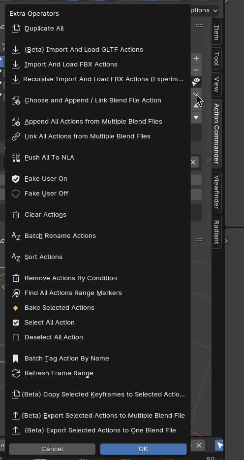

Action List Utility Menu¶
Utility Menu is located at the side of the list
Duplicate All¶
Duplicate All will Make a Copy of All the Action in the object’s Action List,
Options¶
Replace Slot¶
True: Clear the existing actions and replace it with the duplicated ones
False: Add the duplicated Actions into the list instead of replacing them
import and load GLTF actions¶
refer to Import And Load GLTF Actions
this operator will load the imported action into the object’s action list by default unless load object is turned off
import and load fbx actions¶
refer to Import And Load FBX Actions
the operator in this menu is the same as action bin, but with load object turns on
this operator will load the imported action into the object’s action list by default unless load object is turned off
Recursive Import and Load FBX Actions (Experimental)¶
The Operator in this Menu is the same as Action Bin, But with Load Object Turns on
This Operator will Load the imported action into the object’s action list by Default unless Load Object is Turned Off
Choose and Append / Link Blend File Action¶
The Operator in this Menu is the same as Action Bin, But with Load Object Turns on
This Operator will Load the imported action into the object’s action list by Default unless Load Object is Turned Off
Append All Actions from Multiple Blend Files¶
The Operator in this Menu is the same as Action Bin, But with Load Object Turns on
This Operator will Load the imported action into the object’s action list by Default unless Load Object is Turned Off
Push All To NLA¶
This will Push all the Actions in the object ot NLA
Options¶
Preclear NLA¶
Clear All the NLA Strips before pushing the action into NLA
Clear Empty NLA Tracks¶
Clear all empty NLA Tracks
Fake User On / Off¶
Fake User On - This will Turn all the Actions Fake User in an Object On
Fake User Off - This will Turn all the Actions Fake User in an Object Off
Clear Actions¶
This will Clear or Remove all actions from the object’s Action List (Note that the Action will still be in the blend file)
Batch Rename Action¶
This will Allow you to Batch Rename all the Actions in the object by adding Prefix, Suffix, Remove or Find and Replace a Substring
Options¶
Mode¶
Prefix - Add A Prefix to the in front of action name
Suffix - Add A Suffix to the end of the action name
Replace - Find and Replace the String in the action name
Remove - Remove the String from the action name
Prefix / Suffix / Find¶
Prefix / Suffix / Find / Remove String
Replace¶
String to replace to in Replace Mode
Sort Action¶
This will let you to sort your actions order in the list by name or by the frame range size, you can also sort it in reverse with the reverse checkbox on
Options¶
Sort By¶
Name - Sort By Name
Range Size - Sort By Frame Range Size
Reverse¶
Reverse the Sort
Remove Actions By Condition¶
You Can Remove Action by Condition when dealing with a large animation set. The condition supported are by Name (include or exclude) and Frame Range Size (==, >=, <=)
The Box Below will preview the action that match the condition, and to be deleted when confirm.
Options¶
Condition - Name¶
Name - Remove By Name
Include / Exclude - Condition if name include / exclude
Condition - Range Size¶
Operator for Comparing the Frame Range Size- Greater or Equal / Lesser or Equal / Equal
Frame Range Size- Size of the Frame Range to Compare
Show Detected¶
List Matching Action that will be removed
Find All Actions Range Markers¶
Going through the Actions in the object and find and set marker as action’s frame range by name
Options¶
Find¶
Suffix - Condition Find marker name with suffix
Prefix - Condition Find marker name with prefix
Include - Condition Find if marker name include string
Find Marker A & B¶
Find the First Marker & Second Marker
Marker A & B¶
String used to find the marker A and marker B
Bake Selected Actions¶
Bake the selected actions and load it into the list
Options¶
Bake To New Action¶
Bake and Rename into a New Action
Prefix - Prefix Added to the Baked Action Name
Suffix - Suffix Added to the Baked Action Name
Replace if Exist - Overwrite the Action if the Action Name Already Exist
Bake This Action¶
Bake and Overwrite the Current Action
Select / Deselect all action¶
Select all action - select all the action in the object’s action list
Deselect all action - deselect all the action in object’s action list
Batch Tag Action By Name¶
Tag Action in an Object By Name
Options¶
Include¶
Tag the Action if the Action name Include this String
Tag¶
The String used as Tag
Add / Replace¶
Add - Add the Tag to the matching Action
Replacce - Replace the Tag to the matching Action
Refresh Frame Range¶
There is a shortcut key to Refresh your frame range to match your action
The Default keymap is Shift F, but you are free to rebind it to other key
Copy Selected Keyframes to Selected Actions¶
This Operator will Copy Selected Keyframes and Paste the Keyframes to Selected Actions
Options¶
Use Current Frame¶
Keyframe will be pasted starting from current frame